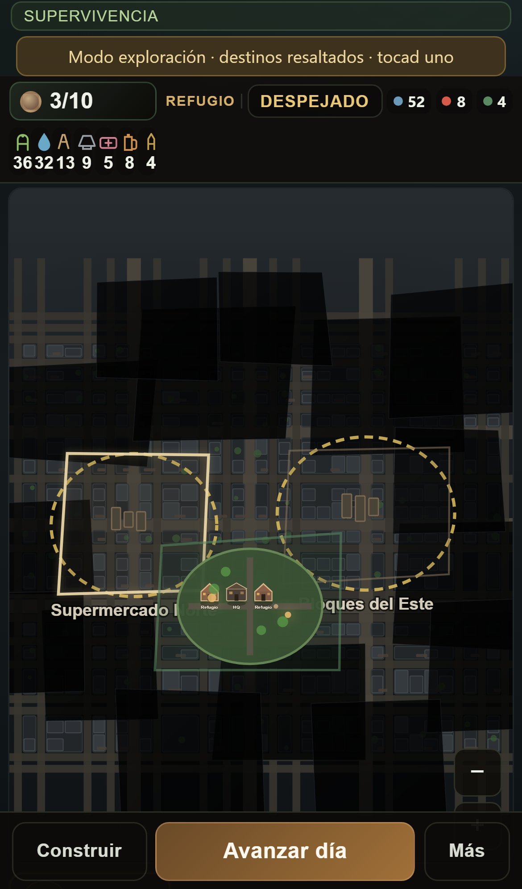
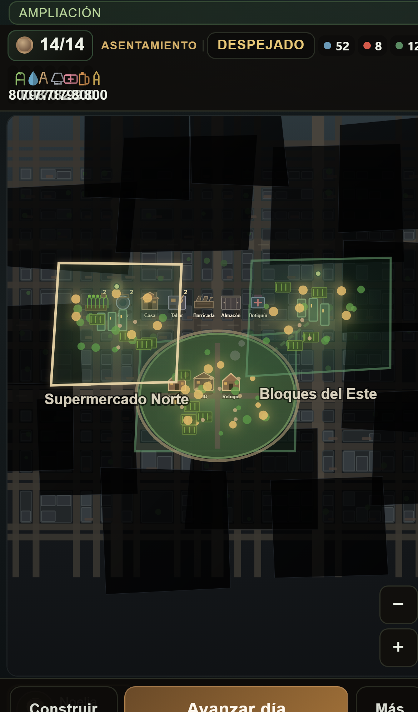
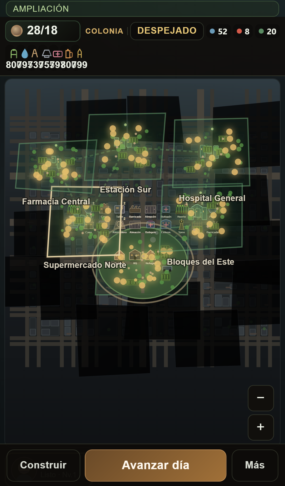
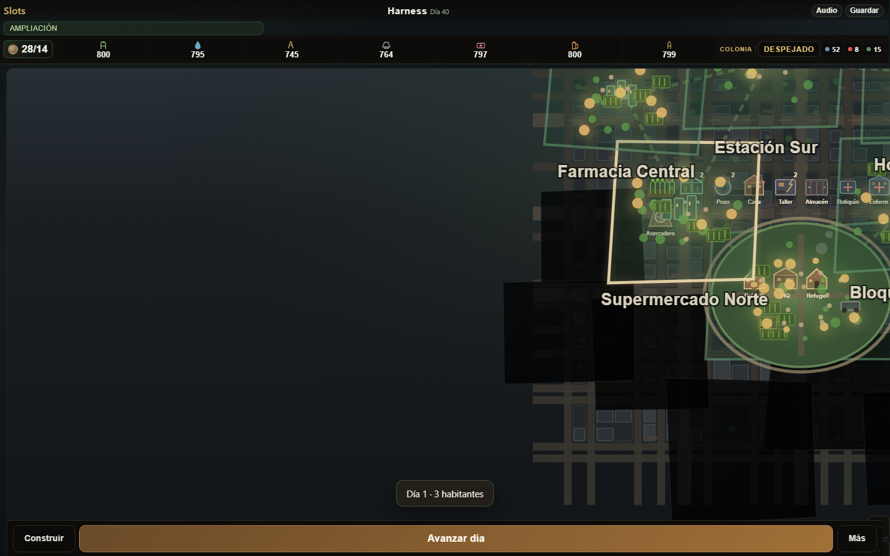

Día 1dia1.png · colonia inicial
Día 1dia1.png · colonia inicial
 Móvilmobile.png · HUD denso + mundo
Móvilmobile.png · HUD denso + mundo
 Poblaciónpoblacion.png · impacto esperado por asignación
Poblaciónpoblacion.png · impacto esperado por asignación
 Construcciónconstruir.png · catálogo visual
Construcciónconstruir.png · catálogo visual
 Exploradorexplorador.png · retrato · nivel · XP · skills
Exploradorexplorador.png · retrato · nivel · XP · skills

Mapa explorandomapa-explorando.png · destinos resaltados

Colonia mediacolonia-media.png · día ~18 · más edificios/luces

Colonia avanzadacolonia-avanzada.png · día ~40 · densamente ocupada
 Gameplaygameplay.png · colonia avanzada en móvil
Gameplaygameplay.png · colonia avanzada en móvil

Desktop panorámicodesktop-panoramico.png · ciudad amplia 1440×900
 Escritoriodesktop.png · mismo estado
Escritoriodesktop.png · mismo estado
 Escritorio · Poblacióndesktop-poblacion.png · panel flotante
Escritorio · Poblacióndesktop-poblacion.png · panel flotante